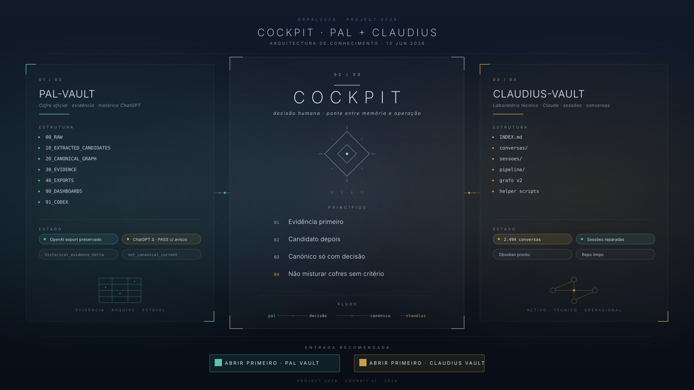

CLAUDIUS orchestrates Claude (strategy hub), ChatGPT (creative partner), Perplexity Pro (deep research), Grok (real-time radar), and NotebookLM (living library) — connected through n8n automation workflows that run 24/7.
O CLAUDIUS orquestra Claude (hub estratégico), ChatGPT (parceiro criativo), Perplexity Pro (pesquisa profunda), Grok (radar em tempo real) e NotebookLM (biblioteca viva) — conectados por workflows n8n a 24/7.
Between memory and operation, a cockpit. The human reads what the vaults hold, decides what becomes canonical, and never lets the machine mix things without criterion.
Entre memória e operação, um cockpit. O humano lê o que os cofres contêm, decide o que se torna canónico, e nunca deixa a máquina misturar cofres sem critério.
Cockpit · pal + claudius · v1
Cockpit · pal + claudius · v1

The bridge between vault and lab. Human decision in the centre.
A ponte entre cofre e laboratório. A decisão humana no centro.